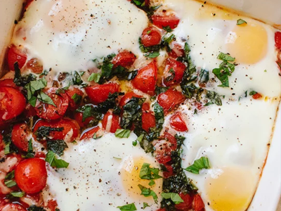

Ingredients
- 3 cups (about 16 ounces) sweet cherry tomatoes or grape tomatoes, halved
- ¼ cup grated Parmesan
- 2 tablespoons olive oil
- 2 tablespoons plus 1 teaspoon chopped fresh basil leaves
- 1 garlic clove, pressed or minced (optional)
- Sea salt, preferably of the flaky variety (like Maldon)
- Freshly ground black pepper
- 4 eggs, at room temperature

Directions
- Preheat oven to 400 degrees Fahrenheit.
- Arrange the halved tomatoes in an even layer in a medium-sized baking dish (mine was a 9-inch by 9-inch square) or oven-proof skillet. Bake the tomatoes for 12 minutes, then remove the dish. (Erin suggests that if a lot of juice has cooked out of the tomatoes, carefully pour off a little liquid. I didn’t need to.)
- Top the tomatoes with all of the Parmesan, drizzle on the olive oil, sprinkle with 2 tablespoons basil and season with salt and pepper. Stir the garlic into the mixture, if using. Gently crack an egg over the tomatoes, keeping the yolk intact. Repeat with the remaining eggs, dispersing them somewhat evenly over the dish.
- Return the dish to the oven and bake for 8 to 10 minutes. Check at 8 minutes—you’re done when the egg whites have set but the yolks are still soft. They should still jiggle in the centers when you shimmy the pan. (Keep in mind that they’ll continue cooking after you pull the dish out of the oven.) Sprinkle the cooked eggs with salt, pepper and the remaining 1 teaspoon basil.
- Serve right away in shallow bowls with toast.